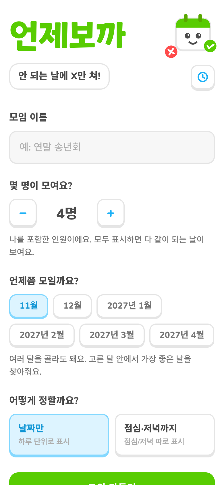
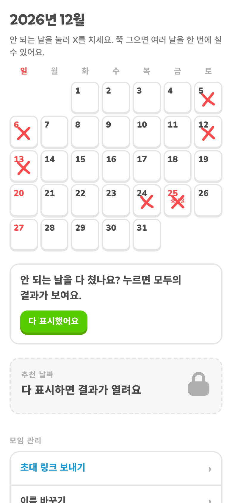
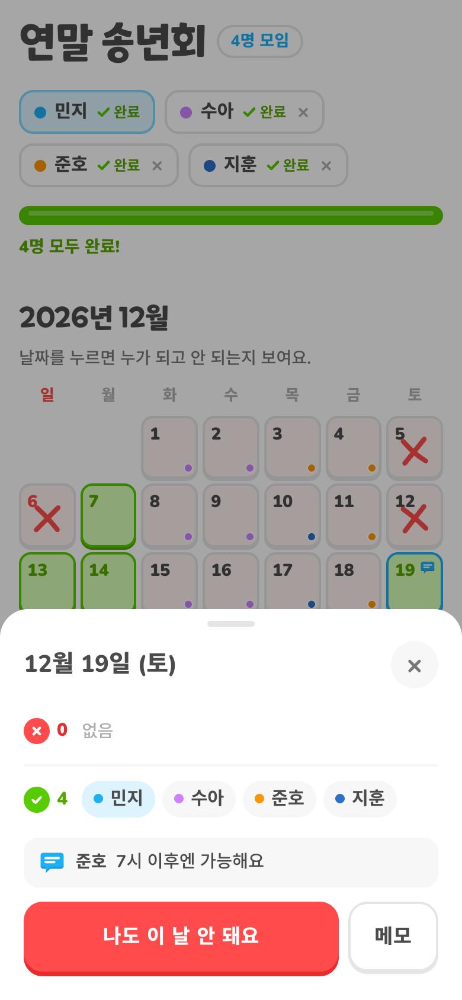

이렇게 써요

모임 이름, 인원, 모일 달을 고르고 링크를 단톡방에 보내요.

친구들은 별명만 적고 들어와서, 안 되는 날을 누르거나 쭉 그어요.

모두 표시하면 되는 날이 초록으로 칠해지고, 추천 날짜가 나와요.
이런 점이 좋아요
모두 되는 날이 없으면, 안 되는 사람이 가장 적은 날부터 골라서 추천해 줘요.
날짜만 정할지, 점심과 저녁을 나눠 정할지 모임을 만들 때 골라요.
"7시 이후엔 가능해요"처럼 날짜마다 한 줄 메모를 남길 수 있어요.
모임은 만든 날부터 30일이 지나면 깔끔하게 사라져요.
남의 표시에 맞추다 보면 진짜 되는 날을 놓쳐요. 그래서 내가 다 표시한 뒤에 모두의 결과를 보여줘요.
몇 명이 들어왔고 몇 명이 표시를 끝냈는지 막대 그래프로 보여줘요.